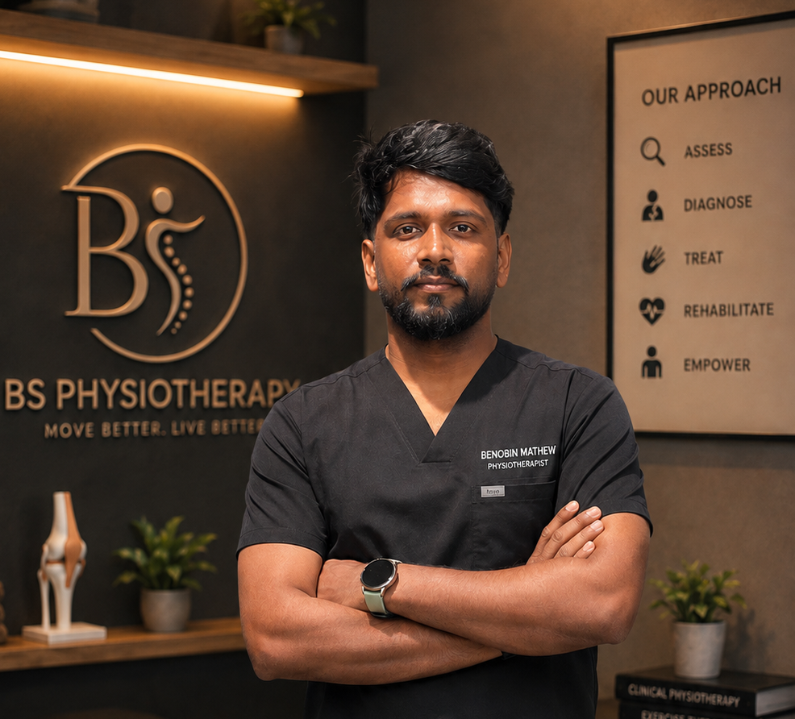
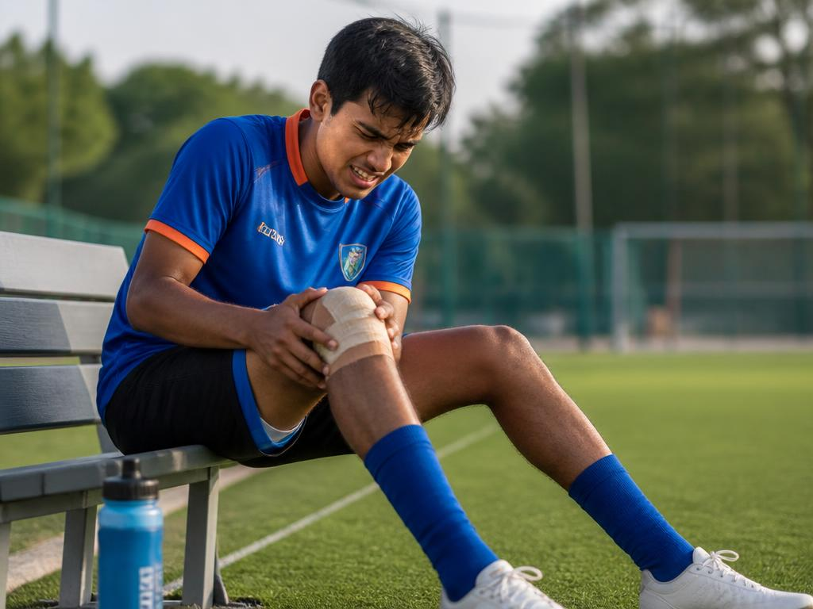
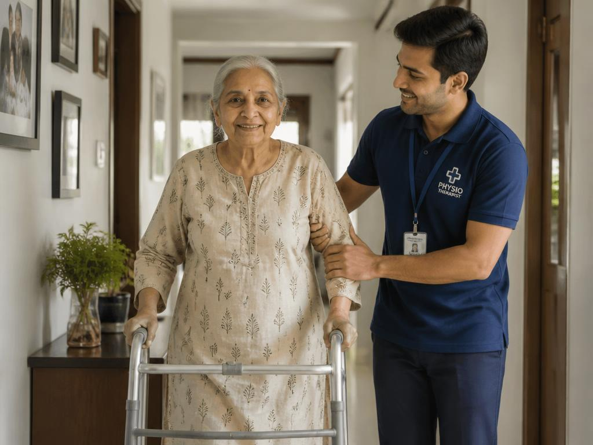

Because recovery isn't just about healing an injury. It's about getting your life back in the comfort of your own home.
When every step hurts, climbing the stairs feels impossible, or pain keeps you from doing the things you love, even travelling to a clinic can feel overwhelming.
At BS Physiotherapy, we bring Bangalore's top evidence-based home physiotherapy directly to your doorstep—so you can focus on healing, not the journey.
Every visit is a dedicated one-to-one session with Benobin Mathew, MPT—a qualified physiotherapist who takes the time to understand your story, identify the root cause of your pain, and create a personalised treatment plan designed around your body, your home, and your goals.

Every programme begins with a proper diagnosis, because the right treatment starts with understanding the real cause of your pain.
Hands-on manual therapy and precise loading plans that settle stubborn pain instead of masking it.

Structured assessment and sports-specific training targeting ligament sprains, muscle tears, and tendon issues. Focused on building stability, power, and loading capacity to guide athletes safely back to their peak competitive performance.
Specialized protocols for post-fracture, joint replacements (TKR, THR), ligament reconstructions (ACL/PCL), or spinal surgeries. Safely control swelling, regain mobility, and systematically re-educate gait in your home.
Evidence-based motor re-education, neuromuscular facilitation, and balance training for stroke survivors, Parkinson's disease, and neuropathies. Aimed at rebuilding motor patterns, muscle strength, and independent movement.

Gentle yet effective strength and balance conditioning aimed at preserving independence, preventing falls, and enhancing general confidence while navigating coordinates in their own household environment (stairs, rugs, bathrooms).
Addressing chronic discomfort stemming from long screen hours. Tailored ergonomic evaluations, soft-tissue relief, thoracic mobilizations, and simple functional strengthening drills designed to fit directly into your busy day.
How we transition you from sudden or chronic pain back to comfortable, regular movement.
Tell me what hurts and how it started. In ten minutes you will know whether physiotherapy is the right answer.
A thorough movement, strength, and joint assessment in the actual room where your daily pain happens.
Personalized care with a dedicated hour focused entirely on your recovery.
A full hour dedicated to your progress, treatment, and recovery goals.
Every day you wait, compensation movement patterns get harder to undo. Send a message with what hurts. The first 10-minute phone consult is free.
Provide details below. Submitting will pre-format a text and connect you directly to WhatsApp for instant scheduling.
Based in Jayanagar, Bangalore. Benobin Mathew provides expert home visit physiotherapy anywhere in Bangalore.